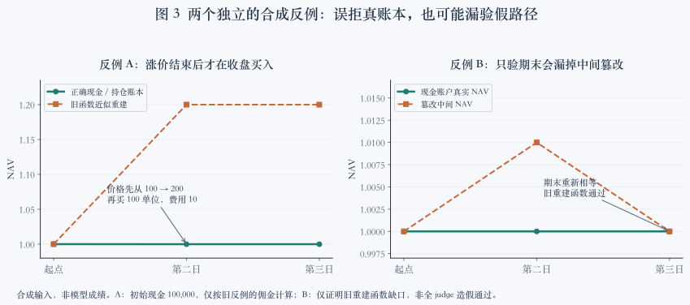

Ruiteng Huang · 2026-10-07 · 阶段性研究稿 · 证据截点 14:40 UTC
让长程 Agent 的下一步有依据
从 EdgeBench 实验理解 LoopX 的长程语义控制面
Agent 可以连续工作很多小时，也可以保留完整对话，却仍然沿着一条低收益路线不断前进。LoopX 要解决的核心问题，是让原始目标、已经获得的证据和下一步行动之间，保持可检查、可修订的联系。
这段时间，我们在 Portfolio 风险校准与 Lean 形式化证明上研究这个问题。相较最初，两题的 blind 实验已经出现扎实的系统级进步：从长期零分、无效续行和缓慢推进，走到了更多可验证产物、更可靠的持续工作，以及 Lean 共同时间窗内明显更快的证明进展。LoopX 的机制修复、提示与 benchmark 跑法的优化共同促成了这一步。
我们的阶段性判断是积极的：长程语义控制面已经在真实任务中展现价值，整套系统也比最初更有效。现在需要拆清各项改进的贡献，并把已出现的进步变得更稳定、可复用。本文同时保留整体改善的证据、具体机制的技术解释，以及尚未解决的反例。
1. 控制面究竟控制什么
一个长程 Agent 至少同时维护两种历史。对话历史保留“此前说过、做过什么”；任务与证据状态保留“现在仍然要满足什么，哪些结论在什么条件下成立，下一步为何可做”。两者可以互补，却不能相互替代。恢复同一对话，不代表旧结论仍然适用；把 Todo 勾完，也不代表最初目标已经实现。
我们把 LoopX 的技术路线称为长程语义控制面。它围绕任务意义组织执行：原始目标与验收条件约束工作，当前证据支持或反驳路线，运行结果触发继续、重规划、等待或停止。模型负责提出和解释选择；控制面负责保存来源、检查状态转换，并把当前仍有效的义务交还给执行者。
- 目标验收条件、范围、停止条件
- 选择可执行候选与选择依据
- 行动工作、验证、真实结果
- 证据观察、解释、适用条件
- 修订继续、换路、等待或结束
这个循环有两个不同的保证层级。系统可以检查一次工作是否有对应结算、证据是否来自指定版本、被拒绝的写入是否留下副作用；它不能仅靠字段检查，证明模型理解了条件或选中了最好路线。协议正确性是可以逐项验证的；认知上的净收益需要行为与结果证据。
因此，长程能力不能用运行时长、Todo 数或图节点数替代。我们真正关心的是：在约束不丢失的前提下，系统能否更早排除错误路线、复用已验证结果，并把有限预算分配给有价值的下一步。这也解释了为什么可靠的评分器、恢复协议和上下文组织，会出现在同一项研究里。
研究问题：经验能否改善后半程的选择
2026-10-10 补充研究问题与比较方法。本次不增加实验成绩；下文数值仍对应各自注明的历史版本与观察窗口。
我们希望检验的是：同一模型、可比预算下，通用 harness 能否让 Agent 更有效地积累并使用经验，使执行中后期继续产生可验证的新进展？例如，一条失败路线留下的不应只有“失败过”，还应包括适用条件、排除了什么，以及什么新证据值得重试。是否保存了这条记录、它是否改变下一步、改变是否有效，需要分别检查。
同一主会话持续理解目标和解释证据，是观察这一问题的一条路径；跨会话恢复则检验状态能否可靠交接。会话连续本身不保证经验利用更好，fresh-context 与 workflow 也可以通过文件和外部状态保留经验。比较时应记录实际会话策略、信息可用性和交接成本，让结果决定适用范围。EdgeBench §5.2 与附录 G 对持续执行和独立重试、不同 harness 的比较，为这些对照提供了依据；它们并未隔离 LoopX 的增量收益。
2. 用两类任务检验，而不是混成一张排名表
Portfolio 要求在公开训练数据上构建策略，并交付一致的交易、风险与会计记录；Lean 要求在固定声明约束下补全证明，并通过编译与公理依赖检查。前者的负证据常是“这个策略在这些条件下不值得继续”；后者的负证据可能是“原陈述缺少条件，这条证明路线根本不可行”。两题都需要长期推进，但证据的形态和可验证结果不同。
| 执行方式 | 保留什么 | 用来回答什么 |
|---|---|---|
| 官方 worker | 官方 stop hook 与继续路径 | 官方执行机制能推进到哪里 |
| 单次 Codex | 一次调用，自然结束 | 没有外层续跑时会做多少工作 |
| 原生 Goal | Codex 的目标执行与继续机制 | 原生长程机制提供怎样的对照 |
| LoopX Resume | 同会话恢复、Todo、重规划与结算 | 语义控制与可靠续行的实际作用 |
| LoopX Explore | Resume 加可选证据记录与探索规划 | 结构化证据是否进入下一次决策 |
Portfolio 的历史设计覆盖五种执行方式 × native/blind 十臂；后续只补关键消融。Lean 主要比较 blind。native 可以取得 judge 反馈；blind 保留公开任务、训练数据、本地测试与验证工具，但无法取得 judge 分数和隐藏诊断。后台自动评测是研究者的观察，不向 blind solver 返回。因此 blind 是“无 judge 反馈”，不是“没有反馈”。
本文报告的模型为 gpt-6.1-sol / xhigh。阶段稿采用的题目默认上限为 Portfolio 12 小时、每 5 分钟采样；Lean 24 小时、每 30 分钟采样。Portfolio 不设置固定的评测总并发上限，Lean 单独限制为 2。更早批次曾采用 18 小时，部分 Lean 组曾延长到 36 小时；这些事实保留在各自记录中，不能追溯改写成新设置，也不代表后续版本的实时默认值。
我们还比较了预置阶段 Todo（seeded）与由 LoopX 从目标形成计划（planned）、不同重规划周期，以及上下文和 Explore 的改进。但这些尝试伴随提示、runner 和契约修复。planned 表现更有希望，已被选作 benchmark 默认入口；这是一项当前工程选择，不是由单次、跨版本结果证明的普遍优势。
已经观察到的整体进步
Lean 提供了较直接的共同时间窗证据。相同 blind 条件下，早期 LoopX v14 与当前 #5844 的有效采样点如下；同一时间能推进更多可验证证明，是实际进展，不能因为尚未拆清贡献就忽略。
| Lean 原始分数 | 早期 Resume v14 | 当前 Resume | 早期 Explore v14 | 当前 Explore |
|---|---|---|---|---|
| 180 分钟 | 0.1103 | 0.3478 | 0.1134 | 0.4019 |
| 450 分钟 | 0.1882 | 0.5243 | 0.1996 | 0.5605 |
这些单次窗口里，当前两条 LoopX 路径约达到早期的 2.8–3.5 倍原始分数。这个倍率描述观测结果；提示、任务入口、runner 与控制机制一起变化，不能作为单项机制的因果增益，也不能直接推广到其他题目。
Portfolio 的进步形态不同。最初的长期零分里混有反馈包装和会计契约问题；修正以后，blind 组能产出合法账本、执行本地研究并得到有效评分。旧 Resume 的最好采样分为 17.32，后续 planned v17 达到 25.39，但其最后采样仅 12.38，旧 Resume 的最后采样为 15.57；两批预算和评分版本也不同。当前 #5844 的 Resume/Explore 在约 7 小时 45 分钟时，最好采样为 15.01/12.21，最近采样为 8.15/9.67。可评测性、续行能力与部分最好结果已经跨过早期障碍，终态质量与持续保优仍有明显空间。
我们据此肯定“系统整体比最初更有效”，同时保留两个后续问题：收益分别来自哪里，以及怎样避免新版本或更长运行出现回退。改进 benchmark 的跑法——保留共同迭代提示、正确恢复、按题配置采样与预算——本身也是长程系统工程的一部分。研究上需要记录它的贡献，不能把所有增益都记到证据图或 replan 名下。
3. 首先让反馈值得相信
最早的 Portfolio blind 零分，暴露了两个不同层次的问题。我们自己的 blind 包装不只移除了 judge 入口，还删掉了持续迭代、保留最好版本等提示；这让反馈消融混入了行为引导差异。修正后用新 attempt 重跑，保留旧结果。随后，对已结束样本的独立对账，又发现了评分器与真实成交语义之间的偏差。
一个十行就能说明的问题，可能使整条曲线失真
假设账户有 100,000 现金，资产价格从 100 涨到 200。直到第二天收盘才买入 100 单位，并付 10 佣金。买入后立即按同一收盘价估值，权益应为 99,990，NAV 为 0.9999。账户没有赚到买入之前的涨幅。
旧重建却用当日收盘后权重乘当日收益，得到约 1.199919992，进而拒绝正确账本。反方向，真实全现金路径 [1, 1, 1] 被报为 [1, 1.01, 1]，仅校验期末的函数又会通过。前一个反例证明误拒，后一个证明局部校验漏检；后者不等于“完整 judge 会接受造假”。

对两个冻结的终末样本，我们不导入 solver 的计算函数，独立核对各 243 个交易日：权益残差小于 4×10⁻⁹，NAV 残差小于 5×10⁻¹⁶，股数一致。这证明了特定账本的一致性，没有证明策略优越。另有 7 组相同成交签名，实际上对应独立的现金、库存和费用变化；签名重复只能触发调查，不能代替经济核验。
ledger-v2 的关键技术约定
新版任务契约固定初始 1,000 万现金、零持仓，交易日收盘执行，5 bps 佣金、1 bp 现金滑点；借券成本按前一收盘空头市值、4% 年率、ACT/365 自然日计提。跨零仓位拆成有序执行腿。逐日验证现金、整数股数、费用、权益、NAV 与权重。
校验必须从价格与执行重建，而非信任报告里的现金或 NAV。负例包括费用遗漏、重复执行身份、无经济效果的额外成交、库存转换错误、中间 NAV 篡改、缺失日期与非有限数值；正例包括合法同量成交、周末借券和无交易日。规则变更有独立版本，不追溯替换历史分数。修复与公开契约见 EdgeBench #14。
修复反馈，不保证策略变好
single blind 的账本可以对平，去掉错误 NAV 扣分之后，其他表现小计仍约为 −1.87，截断后仍是零分。另一个样本消除重复签名误罚会得到 18.05 的反事实值，我们没有把它写成正式新成绩。
成本归因同样需要经济量而非次数。single blind 的 475 笔成交中，281 笔与对冲相关，但其佣金只约占初始资本 0.0412%；借券成本约为 0.4484%，占总费用 0.7129% 的大部分。题目又要求对冲，不能简单删除空头。真正可检验的问题是：公开训练期的策略选择与后续对冲调整，是否共享成本和风险目标。
这一层改进的价值很大，但性质明确：它使研究能分辨真实能力与测量错误，不能算作 LoopX 的求解增益。对正在运行的 blind 组，也不能把终末隐藏诊断变成定制建议。
4. 目标、工作与继续执行，必须有不同的结束条件
上文数值表保留最初阶段稿的证据截点。以下新增机制与收尾观察更新至 2026-10-08 09:33 UTC；仍属探索性分析，不改变正式计分资格，也不代替完整终态验收。
一个具体故障是：seeded-blind 约 34 分钟时写入 no_followup，外层随后恢复了约 100 次，却没有恢复有效工作。调度器还活着，不代表语义上仍有可执行路径。另一类故障相反：模型已经知道需要重规划，控制面却先给出一个必然失败的选项，迫使它调用失败后才获得下一步。
根本区别在于：没有现成 Todo，不等于原目标已经完成。完成当前工作后，需要对照原验收判断：是否已满足；是否在已有授权范围内还有合理候选；是否只是在等外部条件；还是确实没有可做的后续。重规划可以生成新的工作，也可以有证据地继续原路线。它不应为了让循环转动而虚构任务。
为什么按有效 Turn 复盘，比按完成 Todo 更贴近长程工作
旧产品默认以完成 5 个 Todo 作为周期条件。一项证明任务可以持续多小时都不完成，按 Todo 计数就不能及时反映已投入的工作。#5879 将缺省单位调整为已结算的有效工作 Turn：该版本产品为 5 次，benchmark 为 3 次；显式旧 Todo 配置保留其单位。该变更已合并；已有冻结实验仍保留原始配置，源码合并也不代表所有已安装实例自动升级。
这里的 Turn 不是一句模型回复，也不是一次工具调用。周期依据唯一的工作结算事实：未结算 refresh、重试、重复记录不应凭空增加次数。达到周期只要求重新审视方向，不强迫换路，也不授予额外预算或权限。真实入口已验证 Todo 仍 open 时能触发复盘、确认继续后能再次工作；净效果仍须看模型在复盘时作了什么判断。
计数还要区分工作与观察。已验证的负结果可以是有效工作；纯监控轮询、重复提交和未完成结算不能充数。这个区别让长期仍 open 的同一个 Todo 能定期复盘，也避免后台采样把模型推入无意义的 replan。复盘的输出应连接原目标、候选证据和接下来的行动；确认“继续”可以正确，单纯确认“已检查”不足以证明研究方向更好。
复盘成本也应按触发原因拆开：周期检查、局部工作完成后的目标缺口、关键假设被新证据推翻，可能需要不同深度的判断。调整周期只影响其中一类；如果每个小任务结束都重建全局计划，减频未必解决问题。另一方面，replan 阶段可能包含有效探测与验证，不能将整段时间都算成管理浪费。需要从轨迹区分有用的路线修订、重复取证和机械记账，再检验局部续行与较重全局复盘的边界。
恢复与结算是两条相关但独立的链
会话恢复负责保存执行上下文；结算负责把当前 Turn、选定工作、验证结果、持久写回与预算消耗关联起来。丢失响应后的重试，需要识别已有结果，避免重复执行或重复计数。恢复了 session 却丢掉结算，会反复处理同一个障碍；正确结算却恢复错 session，则会丢失求解上下文。
相应修复沿既有 owner 完成：精确会话恢复、下一步与收据绑定，以及 无效续跑诊断。这类工作有很强的故障修复证据；它们保障“能够继续正确工作”，不直接证明“下一步工作选得好”。
5. Explore 的难点，是让证据到达一次真实选择
我们曾看到 Explore 开关已打开，两个组前 180 分钟的 20 次读取也都经过 hook，图却一直为空。模型并非没有发现：例如它把“有限前缀不能直接继承尾部界限”的反例留在本地验证记录中。缺口在于，工作结果没有自然进入图、关联当前问题，再被下一轮使用。提高读取 quota 无法解决一个尚未发生的写入。
因此，改进不只是“提示模型记得写图”。写入通过可选 capability hook 接入普通结果写回：在已有观察与路线决定上，显式补充问题、适用条件、输入版本和结论状态。对于已关联的问题，复用规范范围，减少重复填写；不能从低分自动推断反驳，也不能把“暂时停止”提升成“这条路线永远错误”。
- 捕获：有价值的工作结果是否写入，拒绝或重试是否可恢复？
- 关联：结论是否绑定到当前问题和 Todo，条件与版本是否完整？
- 取回：后续决策是否实际得到它，摘要是否挤掉其他相关反证？
- 采用：模型是否据此修改或明确维持选择，之后的行动是否一致？
这四步不能由节点数代替。后来的冻结四组审计，两个 Explore 组分别已有 1 条和 3 条 finding，但检查的 7 个 Todo 都没有图关联。两次首写缺少 node_id，模型转而创建节点，遇到范围冲突，最后手动记 finding。图终于非空，完整采用链仍没有建立。
#5889 针对此处摩擦：新问题可由显式问题与适用范围派生稳定身份，冲突返回不一致的字段；已存在范围保持不可变，失败无部分写入，重试不重复添加。写入仍受当前 Todo、claim 与 lease 约束。它修机械身份与错误恢复，不替模型编造科学结论。真实带 lease 的写回与读回已验证；补充运行中也出现了自然捕获、关联和下一轮交付的正例。图相对文件或同会话记忆的增量价值仍未分离。
取回端也需要渐进式设计：先覆盖不同问题，再给同一问题更多记录；在小摘要之外提供带版本的分页和按问题展开。初始只显示三条可以是节省上下文的选择，三条成为不可突破的信息上限则会损失决策依据。扩大窗口与准确选择必须一起考察。
必须保留的反证：没有图，也可能记住并使用证据
Portfolio 轨迹中，有模型保留 12 个变体、5 个训练年份和 4 个暖/冷启动检查的结果；另一组用“训练 Sharpe 不低于基线且换手不高于基线”筛选 9 个候选并全部拒绝。后者不一定是好策略：所有候选训练收益更低，4 个冷启动表现更差，可能把有限搜索锁在过于保守的区域。
Lean 的当前 Explore 也会保留难点、记录错误陈述的局部反例，再去做别的章节。这些信息可以由本地文件、Todo 和同一会话携带。要证明图的增量价值，必须指出它额外避免了哪次重复、保住了哪项条件、改变了哪次选择；不能把所有记忆能力归给 Explore。
证据存在、行动采用与实际触达，分别验证
Portfolio 的一个补充样本把风险研究结论写回，再据此实现并测试尾部保护。但在本期实际输入上，受约束配置与无约束配置仍一致。结论进入代码、压力检查通过，不等于它在这次任务中产生了干预。Lean 的另一条链则从周期复盘声明候选，走到安装证明、全量构建和后续批次；这比节点数更接近采用证据，仍不能排除同会话与本地文件提供了相同信息。
边界故障也有研究价值。补充 Lean 运行在给同一个 Todo 关联第九个问题时，遇到最多八个关联的限制。它随后保留原有关联，将额外结论作为 Goal 范围内的独立证据记录，再恢复正常工作。这个限制约束当前任务关联集合，不是整张图最多八条结论。恢复发生不等于没有成本；合理的改进应减少捕获摩擦，同时保住当前决策需要的相关证据，不能靠静默删除旧反证换取成功。
6. 上下文优化，应围绕决策所需的信息流
最初的一个明确冗余是：todo list --todo-id … 已经指定单个 Todo，却在详情、列表和角色视图中重复输出正文。但轨迹进一步说明，精确读取并非主路径：模型也从 Goal 文档、普通 quota 的摘要、批量命令和前轮会话获取 Todo。只把这个单命令缩短，无法解释或解决整体成本。
#5844 因此把目标收拢为“当前工作只交付一份有效正文，其他信息按需要读取”。普通 heartbeat/quota 就提供选中 Todo 的完整要求、适用验收、相关开放 User 义务及实际参与的 hook 内容，不依赖启用 TurnEnvelope。已交付的来源不再重复列为待读命令；混合了目标、其他任务与历史的 Goal 文档仍保留精确完整读取。
| 路径 | 此前 | 调整后 |
|---|---|---|
| 单个 Todo | 同一正文出现在三个视图 | 一个完整规范对象；列表查询仍是列表 |
| 普通 quota | 当前工作摘要 + 后续读取命令 | 当前工作的规范正文一次交付 + 剩余来源的读取命令 |
| 可选能力关闭 | 通用 skill 仍可能诱导无效读取 | 由参与的 hook 提示；关闭时无相应常规义务 |
| 更多背景与证据 | 重复倾倒，或只有短摘要 | 保留来源、完整读取及按问题/版本展开 |
同一合成 Goal 的具体测量，以及它不能说明什么
精确 Todo 的输出从 15,986 UTF-8 字节、三份正文，变为 2,721 字节、一份正文。普通 quota 相对命令型版本则从 23,088 增至 27,137 字节，因为附带了实际内容；待读来源从 preference + Goal + Todo 减为 Goal。不能据此宣布总 token 或延迟降低：若旧读操作本来就在一次批量调用里，少一个 CLI 进程未必少一次模型交互。
在冻结的 12 个实际 wake 样本中，12/12 获得完整 Todo，9 次来自内联或文件形式的 guard，3 次来自精确读取；另核对的 18 份正文与启动源摘要一致。这验证内容到达及来源一致，不验证理解、完整约束执行或最终净费用。此前“压缩约 78%”的合成结果也只能用于相应输出，不能推广到全程成本。
这里的渐进式不是只给一句摘要再让模型猜。它按决策相关性分层：当前工作需要的完整约束直接提供；完整目标、历史和更多证据保留可靠入口。来源失败、选择变化或版本变化时，恢复并重新获取当前上下文，不能沿用旧正文假装读取成功。
可选能力尤其不能借通用说明越过开关。semantic-preference 关闭却仍因通用 skill 被反复读取，是边界泄漏；#5874 把指引放回参与的 hook。更短的包与更少的无效提示都有价值，但不应删掉验收尾部、适用范围、继续条件和失败恢复。优化单位是整条决策路径，不是某个 JSON 的长度。
工具的粒度，应对应一次有意义的操作
值得检验的方向是，把状态与恢复的复杂性收进语义完整、边界清楚的工具：例如取得当前工作所需的完整约束，或提交结果并关联它的来源与适用条件。工具内部可以执行多步校验，模型仍负责解释证据和选择路线。Anthropic 的工具设计经验 同样强调按真实工作组织接口，而非把每个底层 API 都交给模型。
这不是单纯追求更少命令。接口合并仍须保留权限、失败可见性和重试语义；是否更易学、更少出错，以及节省的交互能否转为有效工作，要通过真实执行验证。#6038 已改善具体 action 的 CLI 帮助与 lease 参数错误恢复；这属于使用路径修复，尚不能据此宣称任务效果或全程成本改善。
7. Lean 的中期减速，暴露了当前路线的限制
改进后的 #5844 Resume/Explore 两组在早期推进较快，中期被历史原生 Goal 超过。分析取各组 180–360 分钟的共同窗口，使用 solver 可见的工具结果和冻结源码快照；当前两组同源于 c0d519cf，历史 Goal 为 c46f397c。模型与公开任务摘要一致，日期、runner、提示和预算不同，每格一次，所以这是路线诊断，不能当作干净的框架因果比较。
| blind 组 | 180 分钟原始分 | 360 分钟原始分 | 同期净减少 sorry | 涉及文件 |
|---|---|---|---|---|
| Resume / planned / #5844 | 0.3478 | 0.4919 | 502 | 17 |
| Explore / planned / #5844 | 0.4019 | 0.5147 | 442 | 18 |
| 原生 Goal / 历史基线 | 0.3013 | 0.6477 | 1,015 | 41 |
只列已有效返回的采样点；原始分为 0–1 表示，未乘 100。sorry 从源码词元计数，排除字符串和注释；不是已证明定理数，也不是完整性认证。这些行保留当时的共同窗口，不随后续运行状态改写。
证明工作量与即时分数不是一回事
本题围绕固定原声明，检查公理依赖和原类型，基线不合格声明分母为 2,901。删除一个 sorry、增加 helper、局部编译成功和新增一个有效计分声明，并不等价。桥接自定义定义与 Mathlib 可能先投入再产生下游收益；若下游仍依赖 sorryAx，局部填洞未必获得对应信用。原陈述缺条件时，也不能通过偷偷改签名“完成”。
当前两组大体按章节推进，中期进入极限、级数、重排和极值。Resume 某个 Appendix B.2 Turn 用 16.6 分钟填 6 个洞，Explore 的 Section 8.5 Turn 用 31.5 分钟填 77 个洞，并留下困难点、记录两个原始错误陈述的反例。这些时长包含证明、验证与结算，不能当作纯证明耗时。它们说明有效工作中存在不直接换成正分的部分。
历史基线提示的是候选分配问题
180–360 分钟，Resume 的净填洞主要来自第 5/6 章（213/223），Explore 来自第 6/7/8 章（223/79/140）。历史 Goal 除这些区域外，还推进第 9/10 章、Misc 和 MeasureTheory；这四个区域贡献 344 个净减少洞。它在 41 个文件中推进，当前两组为 17/18 个。后者不只是“同样证明做得更慢”，也做了不同的工作。
不过，“LoopX 不会换路”同样不成立。Resume 约 197 分钟明确调整满射与保序桥接；约 252 分钟识别陈述限制后，从基础 Todo 切换到后续章节。Explore 约 325 分钟保留重排难点、转入 8.5，约 352 分钟保留反例后转入 9.1。复盘在发生，也有实质决策；尚缺的是：是否系统比较了少量可做候选及近期验证成本，从而改善预算分配。
目前没有证据支持“管理包越跑越大”
同一会话累计用量端点做差，Resume 前/后三小时输出约 303k/289k，Explore 317k/292k。含 LoopX 调用的工具事件输出量也从 1.14MB/0.72MB 降至 0.47MB/0.33MB。后者可能混合其他操作，只是传输观察，不能当精确控制开销；它至少不支持中期包体膨胀的解释。
已收集的成功全量构建日志中，声明审计 job 的前/中期时长总和也未增加：Resume 318/257 秒，Explore 181/119 秒，样本数分别为 14/12 与 7/5。对应 180/360 分钟评测的排队约 1.7–3.4 秒、运行约 7.2–11.2 分钟。回显延迟会使页面暂时缺点，但不能解释已经完成的这两个捕获时点的斜率。失败重试和全部验证成本仍未完整覆盖。
所以，下一步不该只提高 quota 或复盘频率。更值得检验的是：候选路线是否可比较，必要依赖与可独立推进部分是否区分，困难点是否保留复访条件。控制面应让这些判断有据可查，而不应把 Lean 的题目知识或隐藏分数硬编码为通用规则。
读曲线要分开三个时钟
求解器已经工作多久、源码在何时被捕获、分数在何时返回，是三个不同的时钟。Lean 全量构建和声明审计耗时较长，采样还可能排队；页面最近一次返回的分数，因此可能描述几小时前的源码。把它画在当前运行时长上，会把评测积压误读为研究停滞。
我们按原始捕获时点对齐共同窗口，保留排队与评测耗时，并区分自动采样、主动提交和最终产物。native 的主动提交不能补进 blind 的自动采样曲线；缺失点不能填零，最好采样也不能替换最后交付。已完成的共同窗口里，新补充组相对 #5844 的落后仍然存在，排队解释不能抹掉这项反证。另一方面，#5844 后段已返回采样仍有增益，也不能仅凭中期减速判定长程控制没有后期潜力。
验证成本与模型成本也要分开。官方重复组同样出现全量构建与探针并发、构建中止和降低线程数的轨迹，说明验证资源竞争可以在没有 LoopX 的路径上发生。输出 token 除以任务墙钟时间，包含思考、工具和等待，并非服务商的纯解码速度。当前证据支持同时考察工作选择、验证组织和模型时间；它还不能给出各因素的独立贡献。
8. 怎样评价这批改进
改善程度与技术深度是两条轴。一项深层契约修复可能只消除罕见死循环；一个简单的提示修正可能立刻释放大量工作时间。我们按解决的缺口与证据评价，不按 PR 数量或通过测试数排序。
| 改进 | 已证明的改善 | 技术上的关键点 | 尚未证明 |
|---|---|---|---|
| 任务与评测有效性 | 强：复现并消除具体误拒/漏检，拆开提示混杂 | 事件时序、路径账本、独立重建、版本化实验 | 修复后各 worker 的公平效果排名 |
| 续行与结算 | 强：具体无效恢复和错误重试路径可验证 | 目标未完成与 Todo 结束分离；会话、结果、结算身份各司其职 | 跨任务的长期净收益与故障率 |
| 上下文交付 | 局部明确：去重、完整正文到达、默认关闭隔离 | 规范来源一次交付；渐进式读取；同一内容 owner 服务普通 quota 与 envelope | 全程 token、延迟与约束保持的净改善 |
| 按工作复盘 | 机制明确：长 Todo 未结束也能触发，重试不充数 | 用已结算事实计数；检查与换路分离；保留显式旧单位 | 频率增加是否改善选路而非增加仪式 |
| Explore 证据循环 | 链路成立：自然捕获、关联、后续交付及可见行动；实际触达不保证 | 条件化结论、稳定问题身份、任务关联、hook 的可选边界 | 超出文件/会话的增量价值，以及任务质量与成本的净改善 |
这批实验已经给出继续推进这条技术路线的正面依据：blind 条件下可验证工作增加，一些失效循环被消除，证据与任务的联系开始变得可观察。长程控制面需要把“工作已经发生”“结果值得相信”“下一步有依据”分成可检查的环节。它们任一处断裂，系统都可能活跃却无效。但把这些环节连好之后，仍然需要一个会选择研究方向的模型。我们的进展已从“让 Agent 多跑一会儿”走向“让更多运行时间产生有效工作”。下一阶段要把这种系统级改善稳定下来，并验证它能否继续抬高能力上限。
9. 从阶段结果走向可重复比较
截至 2026-10-08 09:33 UTC，已记录的补充设计为同一冻结主干上的 Explore × native/blind：Portfolio 两组、Lean 两组。两题各增加一次官方 blind workflow 重复运行，复用已有 Resume、Explore 与最初基线。Portfolio 12 小时、每 5 分钟采样；Lean 24 小时、每 30 分钟采样。LoopX 补充组采用 planned 入口、每三个已结算有效工作 Turn 复盘，TurnEnvelope 关闭。精确源码、镜像和原始开始时间各自保留，后续修复不热更新旧组。
| 收尾项 | 要回答的问题 | 决定性证据 |
|---|---|---|
| Portfolio：终态与保优 | 训练选择、风险干预与最终质量是否一致？ | 分别复现最好采样和最终产物；独立重建账本，检查原收益/风险目标与真实干预；保留失败 |
| Lean：合法进展与后期选路 | 后段是否仍产出原声明的有效证明，证据是否改变候选分配？ | 标准公理与原类型核验，捕获时点对齐的窗口，复盘→实施→验证链及完整阶段成本 |
| 官方重复组 | 基线路线和验证资源波动有多大？ | 保留历史组，比较共同窗口与终态；单次重复不冒充统计稳定性 |
| 现有冻结状态的隔离重放 | 仍未解决的机制歧义，是否会改变结论？ | 仅在需要时复用同源码、同工作负载；不另铺混杂长程矩阵 |
在上述记录截点，Portfolio 补充组已结束并完成独立数值与账本重放；Lean 和官方重复组尚未完成完整收尾。本次方法更新不把这一历史状态写成实时运行状态，也不补写未核对的终态。最终分析须核对求解结束、全部捕获评分、完整性、原任务目标、全程成本和证据采用。某个终末分数已返回，不代表所有历史捕获都已评测；源码能构建，也不等于所有原声明已满足。
后续验证：先确认差异，再解释原因
集成改进回答整套系统是否更有用；独立重复回答结果有多稳定；机制消融回答差异由什么造成。三者需要不同证据。增加任务或执行方式，不等于在同一条件下重复；单次最好结果也不能代表稳定收益。后续比较应先固定模型、任务与评分版本、提示、反馈权限、会话策略和预算，用集成探索筛出主要差异，再冻结配置做重复确认，并围绕差异选择少量关键消融。开发和反复选配置所用任务，与最后用于确认的任务应明确区分。
强基线应保留其正常续跑、文件记录与合法反馈。若研究显式证据组织的增量，就要与能够保留同类信息的普通文件或会话比较。若测试“出现新 best 才返回该候选的完整合法反馈”，则应把它作为独立反馈条件：确认 best 的方式、可返回内容和通知规则提前固定，先在同一规则内比较 harness。更丰富或不同频率的反馈不能被计作结构本身的收益；没有通知也不等于任务退步。
| 比较维度 | 需要同时保留的证据 |
|---|---|
| 质量与保优 | 同预算的最好有效产物、最终可用交付、成果退化；最好采样不替代终态验收 |
| 时间与费用 | 达到同等质量的耗时和费用；模型、工具、控制与恢复成本；评测成本及资源等待单列 |
| 后期增益与机制 | 按捕获时点对齐的后段新增有效工作；证据送达、读取、选择变化与实际行动的对应关系 |
| 稳定性与可复现性 | 独立重复的分布、失败与无效运行、人工接管；另一位使用者能否在指定版本取得产物和解释记录 |
后续结果仍沿这篇双语文章更新：收益说明发生的任务与条件，回退分析选择和成本，无法区分的贡献保留不确定性。让另一位研究者能够检查设置、理解负结果并复现关键比较，才使阶段观察成为可积累的研究依据。